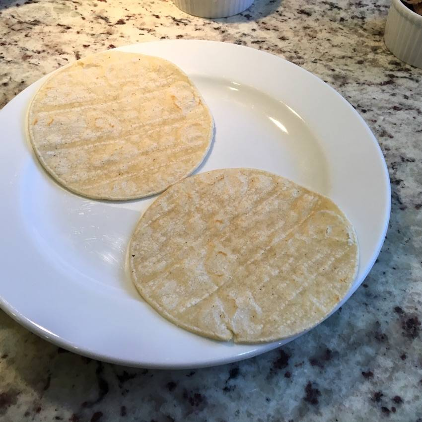
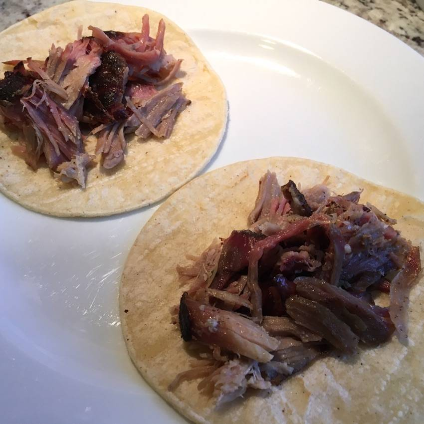
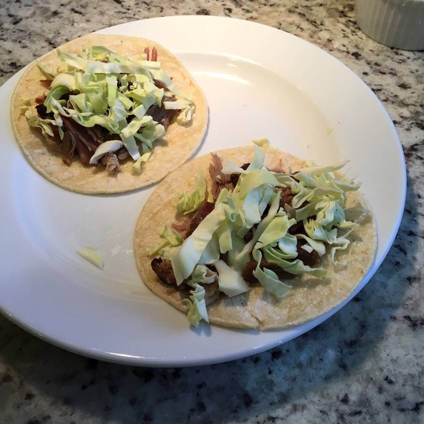
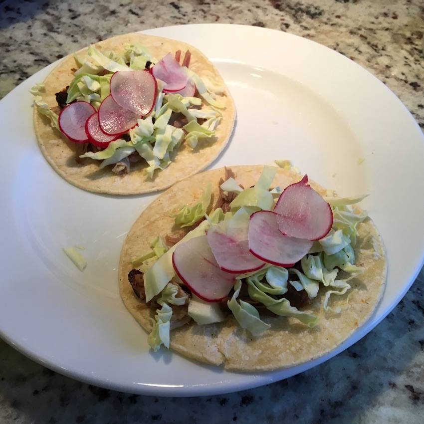
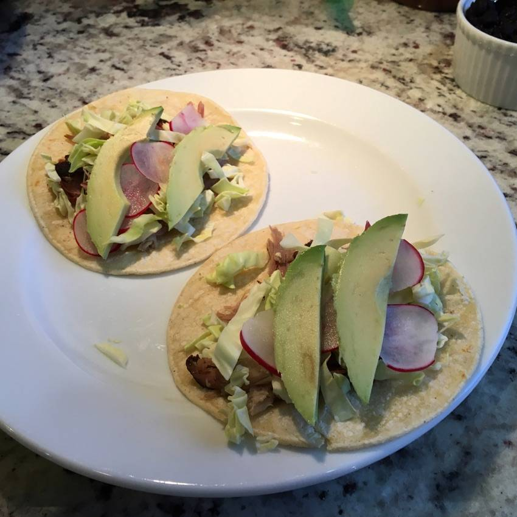
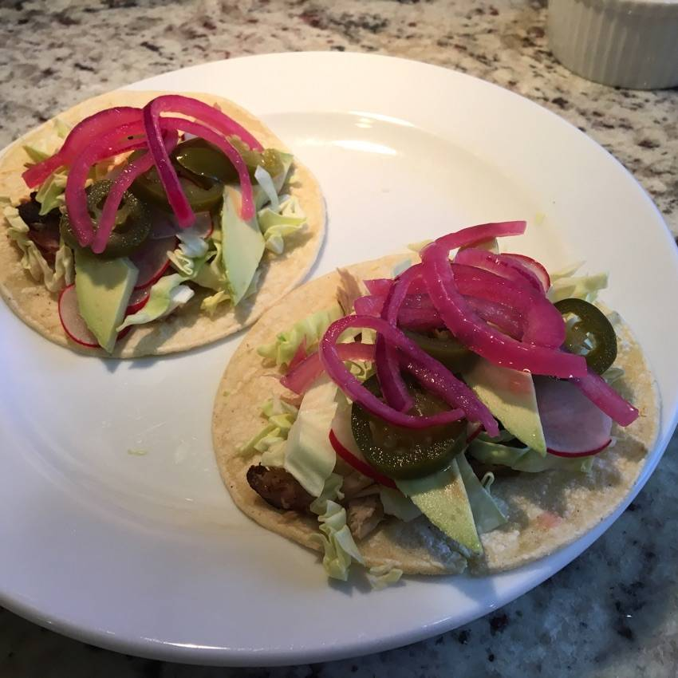
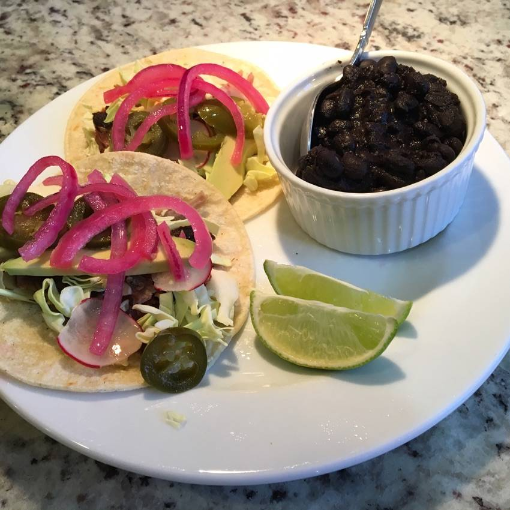

MY ULTIMATE TACO RECIPE
Well, @GargiBera, it just so happens I’m having tacos for lunch today! I love tacos so much and we have them a lot. Everything in this “recipe” can be adjusted/swapped/augmented in a million ways which is one of the things that makes tacos so wonderful. 🌮🌮🌮
-

Corn tortillas, toasted in a dry pan to warm them up and make them a little toasty.
I prefer corn but hey I love soft tacos on four tortillas too, and I love crispy tacos too. I will say though that store-bought hard taco shells always taste stale to me so I don't buy them. And making them is a pain so we've only done it once or twice.
-

Add some protein. I'm using leftover smoked pork here.
We usually use pollo asado—whole chickens butterflied and grilled flat on charcoal—which is readily available here but maybe hard to find elsewhere. I also use rotisserie chicken which is great for tacos.
-

Shredded green cabbage.
Cabbage holds up to heat way better than lettuce and this is more traditional. It also has a great crunch.
-

Thinly sliced radish.
Also a very traditional topping in Mexico but not in American Mexican restaurants which is a shame.
-

Avocado.
In Mexico they always use that "guacamole" that is smooth and runny. It is delicious but I don't know how to make it. I should ask some friends and report back...
-
(I put some pickled jalapeño on there but forgot to take a picture).
The taco stand we frequent in Mexico has roasted whole jalapeños that are 💯. But sliced fresh, pickled, etc. are also awesome additions.
-

Cebollita.
The secret weapon. Beautiful and delicious. See: https://li.st/l/4MXpxUHQevwQu4jSm64bOG
-

Serve with lime wedges and leftover homemade black beans.
-
¡Desfrute!